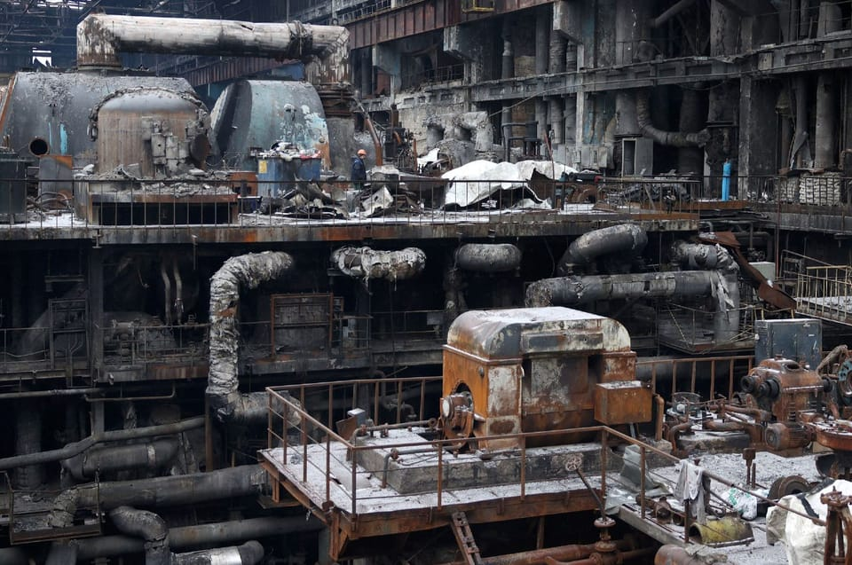

世界苦茶11月09日新闻 | 26条 | 香港小学简体字争议

香港小学简体字争议 | 习近平谈推动粤港澳大湾区一体化 | 中国暂停稀土出口管制 | 中国将荷兰官员会谈安世半导体事宜 | 俄罗斯大规模攻击乌克兰发电设施
苦茶数据
美元兑人民币：7.12（昨日7.12，前日7.12）
美元兑日元：153.54（昨日153.19，前日153.86）
上证指数：休市（昨日3997，前日4005)
标普500指数：休市（昨日6728，前日6720）
比特币：101656（昨日102481，前日102333）
布伦特原油：63.63（昨日63.68，前日63.56）
中国新闻
• 红色氛围“人民咖啡馆”被官媒批不妥 品牌致歉更名。
中国多地出现“人民咖啡馆”，成为新网红打卡点。但官媒批评店名不妥，“人民”一词有鲜明政治内涵，不可滥用。咖啡馆运营公司回应称会更名并全面整改物料。综合中国媒体报道，主打“以咖啡讲述中国故事”的“人民咖啡馆”在中国20个城市已铺开30间家门店，以搪瓷缸、五角星等元素营造红色氛围，一些店内还有“解放台湾”海报，被一些打卡者误以为是国营咖啡馆，但运营公司“要潮文化”实为一家上海私企。人民网星期五发评论称，“人民”一词具有鲜明的公共属性和深厚的政治内涵，承载着特定的社会情感与公共利益，不容亵渎，更不能被滥用。“营销可以有创意，但不能无底线”。评论指出，要潮文化公司曾多次申请“人民咖啡馆”商标。
• 香港一小学批准用简体字答卷 逾300名家长联署反对。
香港一所小学通知家长将批准学生在校内测验及考试用简体字作答，却引发争议，有家长发起联署促校方撤回决定，获得逾320名家长签名。综合《信报》、香港01报道，涉事的沙田官立小学是在11月3日发出上述通告，旨在为中国大陆背景或习惯使用简体字的学生提供“更友善的评核环境”。有该校家长在香港商台节目中透露，在此前的评测中，十多名来自大陆的插班生错字情况严重，估计新措施是为“包容内地生”，但他质疑这么做是牺牲了写繁体字的学生的利益，并不公平，因为简体字笔划较少，变相有更多时间作答，他也质疑校方没有为教师提供批改简体字的培训。
• 习近平在广东行再次加大推动粤港澳大湾区一体化力度。
中共国家主席习近平要求南方广东省加强与香港、澳门在科技、基础设施和监管方面的合作，以推进粤港澳大湾区规划。广电总台新华社引述习近平周六对广东高级官员的话说：“发展大湾区既是广东的一项重大责任，也是难得的发展机遇。广东要大力深化与香港，澳门在科技创新与合作，基础设施互联互通，市场监管对接，在立法，执法和司法等各个程序上的合作，以及进一步的市场一体化等方面的合作。
**• 广电总局发“不良动画微短剧和动画短视频”专项治理工作提示。 **
漫画、表情包等各类动画微短剧全量纳入“白名单”制度，“重点、普通”类向省级广电部门报审（AIGC动画列为重点类），其他类由平台自审备案。即日起无备案号不得上线。存量作品在2026年3月底前补办，逾期强制下线。严禁使用丑闻劣迹人员形象声音制作素材，禁止传播儿童熟知动画形象的恶搞二创，及已下线真人微短剧的动画改编版。
• 巴基斯坦海军将于2026年装备中国潜艇。
观察人士称，这次交付也表明北京已克服了这些舰艇建造中的一项重大技术障碍。在接受与《人民日报》有关联的《环球时报》采访时，巴基斯坦海军参谋长纳维德·阿什拉夫上将表示，中巴联合建造的首批汉戈尔级常规动力攻击潜艇预计将于明年进入该国海军服役。阿什拉夫称，潜艇项目“进展顺利”，值得注意的是它提升了伊斯兰堡的潜艇战力，有助于“通过技术转移和技能培养实现自给自足”，并反映出中巴在海军装备方面的紧密合作。据《环球时报》周日刊文报道，阿什拉夫表示，源自中国的平台和装备一直可靠，技术先进，且适合巴基斯坦海军的作战需求。
印太新闻
• 印尼警方调查清真寺袭击嫌疑人与仇恨组织之间的联系。
印尼警方表示，在一起造成数十名学生受伤的高中清真寺袭击案中，他们从一名17岁嫌疑人的住所查获了爆炸性粉末和书写材料，并正在调查其与仇恨团体的可能关联。国家警察局长利斯蒂奥·西吉特周六在探望该嫌疑人及受害者后说，该嫌疑人是周五雅加达爆炸事件中54名受伤者之一，目前仍在医院康复。该嫌疑人是两名因爆炸受伤正在接受手术的学生之一。西吉特表示：“嫌疑人的情况已有所好转，希望他恢复后我们能更容易对其讯问。”他补充称，警方目前只有一名嫌疑人，“但我们不会就此停止。我们将继续调查是否有其他个人或团体参与其中。
• 日方周五宣布日本水产品对华出货重启。
关于中国在东京电力公司福岛第一核电站处理水排海后采取的暂停进口日本水产品的措施，日本农林水产省周五发布消息称，日本水产品的对华出货已经重启。日本东电公司福岛第一核电站 2023年8月启动处理水排海作业，中国自此暂停进口日本水产品。今年六月，中方宣布，将对产自福岛县、宫城县等十个都县之外地区的日本水产品的进口予以放行。日本农林水产省发布消息称，进入11月份之后，日本水产品的对华出货已经重启，5日有约6吨北海道产冷冻扇贝出货，10日将有约600公斤青森县产盐渍海参出货。
科技新闻
• 金·卡戴珊称ChatGPT是她的“亦敌亦友”。
在专访中，正在攻读律师资格的金·卡戴珊谈及她与ChatGPT的有毒友谊，承认因该程序提供错误信息导致她多次律师考试失利。“我用ChatGPT获取法律建议，每当需要知道问题答案时，我会拍照上传，” 她说，“但答案总是错的。它害我考试挂科，之后我会生气地对它大喊：‘你害我挂科了！’”卡戴珊表示，当ChatGPT令她失望后，她还会尝试劝它讲道理。“我会对它说：‘嘿，你要害我挂科了，你需要真正掌握这些答案 —— 这让你作何感受？’”她说道。“然后它会回复我：‘这只是教你要相信自己的直觉。’” “我经常截屏发到群聊里，如：‘敢信这B居然这么跟我说话？’”
经济新闻
• Nexperia危机：北京同意在中国与荷兰官员会谈。
此前一天，荷兰表示中国制造的恩智浦芯片将很快恢复出货 会议未有具体日期。“中国希望荷兰的表态不仅仅停留在口头上，而是能尽快转化为建设性解决方案和切实行动，迅速有效地从源头恢复全球半导体供应链的稳定，”中国商务部在一则声明中表示。卡雷曼斯周五表示，中国可能会在“未来几天”恢复向恩智浦在欧洲及其他地区客户的芯片供应。彭博社同日援引消息称，如果恩智浦中国恢复出货，荷兰政府准备“最早下周”放弃对该公司的控制。
• 迈克尔·斯彭斯谈中国：解决房地产问题，提振信心。
诺贝尔奖得主斯彭斯谈中国：先修复地产、重建信心——关税属于次要问题 在上海虹桥国际经济论坛上发言时，迈克尔·斯彭斯强调应避免损害家庭资产负债表 重建信心并稳定房地产市场“远比关税影响更为重要”，这位诺贝尔经济学奖得主在警示中国家庭面临金融风险时表示。虽然他承认北京需要“认真”应对关税摩擦，但这位82岁的加美双重国籍学者称，此类外部因素“对于恢复中国经济的势头而言属于次要重要性”。“房地产部门及与之相关的金融部门的稳定，以及恢复信心和经济动能，远比关税带来的任何影响更为重要，”斯彭斯说。他同时是斯坦福大学商学院菲利普·H·奈特教授及名誉院长。
俄乌战争
• 匈牙利的欧尔班从特朗普那里得到了什么——又没得到什么。
表面上看，匈牙利总理此行正是为他赴华盛顿所图：充满溢美之词，并获得对俄罗斯石油、天然气和核燃料供应的制裁豁免。而这一切发生在距离一场艰难选举仅五个月之际。然而细看之下，情况并不那么明朗。美方达成了一项强硬的贸易协议——对匈牙利代价不菲。奥尔班最头疼的问题——结束邻国乌克兰战争及其给匈牙利投下的长期阴影——并无进展。先看奥尔班的关键胜利：来自美国的制裁豁免。白宫一位官员告诉BBC，这一豁免具有一年的时限，尽管匈牙利外长彼得·西雅尔托称将是无限期的。这个时间跨度耐人寻味。特朗普显然想帮助他的朋友在四月赢得选举。该豁免在某种程度上也部分与欧盟委员会要求所有成员国在2027年底前结束对俄石油的依赖。
• 乌克兰国有能源公司称，在俄罗斯“史上最大规模袭击”之后，其所有发电厂均已停运。
乌克兰国有能源公司称在俄罗斯“史上最大袭击”后其所有电厂均已停运 乌克兰国有能源公司Centrenergo在11月8日宣布，旗下所有火力发电厂在这次针对全部电厂的“俄罗斯史上最大袭击”后均已停运。公司表示，此次袭击再次击中此前在2024年攻击后已恢复的同一座座火电厂，11月8日晚间俄罗斯多架无人机“每分钟”对其实施袭击。乌克兰空军报告称，当晚俄方发射的458架无人机中，乌军击落了406架，其中包括“沙赫德”式攻击无人机。声明称，俄方还发射了45枚巡航和弹道导弹，其中9枚被击落。
• 在俄罗斯袭击乌克兰东部一场军事授勋仪式后，乌克兰一名指挥官被控玩忽职守。
乌克兰一无人系统营指挥官因在本月早些时候违反禁令在第聂伯罗彼得罗夫斯克州为士兵举办授勋仪式而被控过失。国家调查局11月7日表示，该军事集会遭到俄罗斯袭击。总检察院称，袭击造成12名军人和7名平民死亡，另有36人受伤。调查人员称，该官员于11月1日在第聂伯罗彼得罗夫斯克州前线地区组织了针对100多名官兵的正式集合和授勋仪式，地点包括有平民在场的区域。尽管总参谋部已禁止此类集会，该指挥官在空袭警报期间既未停止活动也未疏散士兵，SBI称。事发时，据报道俄罗斯用3架“格兰”无人机和2枚“伊斯坎德尔”导弹袭击了集合点。
• 过去24小时内，俄罗斯的袭击在乌克兰造成至少10人死亡、44人受伤。
地区当局11月8日表示，过去一天俄罗斯对乌克兰的袭击造成至少11名平民死亡、44人受伤。空军报告称，乌克兰部队在夜间击落了458架俄方发射的无人机中的406架，其中包括“沙赫德”型攻击无人机。声明称，俄罗斯还发射了45枚巡航和弹道导弹，其中9枚被击落。此次大规模袭击针对乌克兰的天然气与能源基础设施，导致部分地区停电。当局称，俄罗斯无人机袭击第聂伯市一栋居民楼，造成至少3人死亡、12人受伤，其中包括2名儿童。赫伊瓦年科州长称，11月7日早些时候，俄罗斯对尼科波尔的袭击造成一名43岁妇女和两名分别为47岁与57岁的男子受伤。波尔塔瓦州州长弗洛迪米尔·科胡特报告称，夜间袭击造成一人受伤。
• 无人机袭击在基辅引发火灾，俄罗斯对乌克兰能源基础设施发动“规模巨大”的攻击。
基辅在俄罗斯对乌克兰能源基础设施发动“最大规模之一”的袭击后面临超过12小时的应急停电 编者按：这是一个持续发展的报道，正在更新。阅读有关俄罗斯11月8日夜间袭击的最新消息，包括其对第聂伯一座居民楼的无人机袭击。乌克兰首都基辅及基辅州在11月8日夜间遭到新一轮大规模俄罗斯袭击，目标是乌克兰的能源和天然气基础设施，随后出现应急停电。乌克兰空军报告称，当晚俄罗斯发射了458架无人机，乌克兰防空部队击落了其中406架。声明称，俄罗斯还发射了45枚巡航和弹道导弹，其中9枚被击落。克列缅丘克、基辅、第聂伯、哈尔科夫和切尔尼戈夫是俄罗斯袭击的主要目标。苏梅市以及敖德萨州也传出爆炸声。
世界新闻
• 法官称教育部带有党派色彩的离岗自动回复邮件违反了美国宪法第一修正案。
一位联邦法官裁定，特朗普政府在用带有党派语言、指责民主党导致政府停摆的措辞取代教育部雇员的个性化离办自动回复邮件通知时，侵犯了他们的第一修正案权利。
• 白宫称BBC关于国会大厦冲击事件的节目为“假新闻”。
白宫新闻秘书卡罗琳·利维特指责英国广播公司在一部《全景》纪录片中对2021年美国国会山冲击事件的描述“故意不诚实”。日前，英国公共广播公司因被指通过拼接唐纳德·特朗普在2021年1月6日的不同讲话片段误导观众而受到抨击——当天抗议者冲入了美国国会山。在周五《每日电讯报》发表的谈话中，利维特批评BBC在该关于事件的《全景》节目中播放了“选择性剪辑”的特朗普演讲片段，并补充说该广播公司“已不再值得英国观众在电视上花时间观看”。
• 在边境紧张局势升级之际，巴基斯坦与阿富汗在伊斯坦布尔的和平会谈失败。
巴基斯坦与阿富汗在伊斯坦布尔的和平会谈未能达成协议，边境紧张局势加剧。官员周六表示，巴基斯坦与阿富汗在伊斯坦布尔就缓和边境紧张局势并维持脆弱停火进行的和平会谈以破裂告终，双方互相指责导致谈判失败。数周来，边境紧张局势升级，此前的致命边境冲突造成数十名士兵和平民丧生。这轮暴力在10月9日喀布尔发生爆炸后爆发，阿富汗塔利班政府称那是巴基斯坦发动的无人机袭击，并誓言要报复。10月19日卡塔尔斡旋达成停火协议后，冲突有所缓和，但停火仍处于脆弱状态。
• 坦桑尼亚对数百人以叛国罪提起指控，并对更多反对派人士发出逮捕令。
在选举后当局追捕关键反对派人士之际，坦桑尼亚数百人被控叛国罪。上个月围绕存在争议的选举发生示威后，数百人被以叛国罪起诉，此举大幅升级了政治紧张局势，国家正因在骚乱中发生不明人数死亡而震荡。根据周六公开的多份起诉书，继前一天在达累斯萨拉姆对数十人提起刑事指控外，在该东非国家其他地区还有数十人面临类似的叛国指控。通缉的嫌疑人包括有影响力的传教士约瑟法特·格瓦吉马，他今年早些时候因批评政府侵犯人权而被取消教会登记。警方还对一些尚未入狱的主要反对派官员发出逮捕令。
• 塞尔维亚为与特朗普有关的有争议房地产计划扫清道路。
塞尔维亚议会通过了一项法律，为由美国总统唐纳德·特朗普的女婿贾里德·库什纳领衔的有争议地产开发铺平了道路。库什纳的公司Affinity Partners计划在前南斯拉夫军队总部旧址上兴建豪华酒店和公寓综合体。这座在1999年北约干预以阻止塞尔维亚在科索沃的军事行动时被炸毁的废墟，对一些人具有象征意义，被视为纪念地和持续反对这一军事同盟的象征。与特朗普保持密切关系的塞尔维亚总统亚历山大·武契奇在面对抗议和法律挑战时仍支持该计划。去年，塞尔维亚政府取消了该建筑的保护地位，并与库什纳的公司签订了99年租约。（翻评：这种都是直白的政治贿赂，塞尔维亚这样的亲俄亲中国家，贿赂特朗普是为了什么呢？）
• 尽管特朗普政府提出上诉，全额SNAP福利已开始发放。
最高法院暂时阻止全额发放SNAP福利，即便部分州已开始发放 美国最高法院临时批准特朗普政府的请求，阻止在政府停摆期间发放全额SNAP食品补助，即使一些州居民已开始收到款项。特朗普政府正在上诉，要撤销一项全面恢复该国最大反饥饿项目的法院命令。最高法院周五晚间的决定为下级法院争取时间，以考虑是否实施更持久的暂停。此举可能加剧混乱，因为政府在上诉同时表示周五已向各州拨款，旨在全额资助SNAP。在美国地区法院法官约翰·麦康奈尔周四下午作出该决定后不久，各州便开始宣布将发放全额SNAP福利。部分人周五醒来时，类似借记卡的EBT卡上已显示到账可用于购买食品的款项。
• 赫格塞斯语气一变，对国防工业态度转暖。
五角大楼首脑在周五对企业高管的演讲中发出罕见的团结信息 防长皮特·赫格塞斯在11月4日于韩国首尔与韩国国防部长安奎伯检阅仪仗队时敬礼。周五，国防部长皮特·赫格塞斯在任期内最具实质性和统一性的政策讲话中，对军方与防务公司之间“缺乏紧迫感”和“根本性的信任缺失”表示遗憾。这场在国家战争学院对业界高管发表的演讲，开启了一项雄心勃勃的加速武器交付计划——这是几十年来困扰历届政府的问题。赫格塞斯的讲话深入探讨了采购改革的繁琐细节，类似以往五角大楼首脑的演说风格。
• JD Vance 希望他的印度教妻子改宗基督教，引发关于跨信仰婚姻的争论。
副总统JD·万斯最近在一场人满为患的大学体育馆活动上表示，他希望自己的印度教妻子某天能改信基督教，此言将跨信仰夫妻所面临的敏感挑战推到了聚光灯下。曾为数百对信仰不同的夫妇提供咨询的专家表示，关键在于彼此尊重对方的信仰传统，并就如何抚养子女进行诚实的讨论。大多数专家认为，施压甚至希望对方改宗可能对关系造成伤害，公众人物的夫妻尤甚。
• 美国参议员将于周末加班，力图解决政府停摆问题。
自政府关门以来的第一个周末参议院工作日周六几乎没有进展，共和党参院多数党领袖约翰·图恩希望尽快表决的愿望未能实现。已持续39天的僵局对全国影响日增，联邦雇员仍然无法拿到工资，航空公司取消航班，数以百万计美国人的补充营养援助计划付款被延误。周六会议开局就遇阻碍，总统唐纳德·特朗普明确表示不太可能很快与要求将《可负担医疗法案》税收抵免延长一年的民主党达成协议。他在社交媒体上称该体系“是世界上最糟糕的医疗体系”，并建议国会直接把钱发给个人，让他们去买保险。图恩表示，特朗普的提议不会成为结束关门的解决方案。
• 特朗普称美国将抵制在南非举行的G20峰会。
唐纳德·特朗普表示，美国将抵制在南非举行的二十国集团峰会，理由是关于白人在该国遭受迫害的说法被广泛质疑。美国总统称南非主办此次在本月晚些时候于约翰内斯堡举行的世界最大经济体领导人会议是“完全可耻的”。南非外交部将白宫的决定形容为“令人遗憾”。包括代表阿非利卡人及更广泛白人群体的政党在内，南非没有任何政党宣称该国存在种族灭绝。
• 罗德里戈·帕斯宣誓就任玻利维亚新总统，结束了长达20年的一党统治。
保守派政治家罗德里戈·帕斯周六宣誓就任玻利维亚新总统，结束了安第斯国家近20年的一党执政，开启新时期。帕斯在国会议员和外国领导人面前宣誓就职，右手举向圣经与十字架。“上帝、祖国与家庭，我郑重宣誓，”他说完后接受了总统绶带和勋章。现年58岁的帕斯就职引发了疲惫于严重燃料短缺和高食品价格的玻利维亚民众的期待，这些问题已成为该国40年来最严重经济危机的标志。出人意料的是，他在上月的总统决选中击败了更为知名的右翼对手、前总统豪尔赫·“图托”·基罗加。